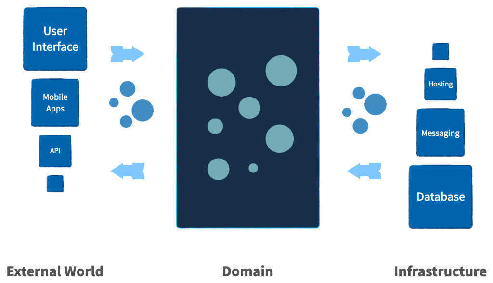

Features
Managing Complexity
Managing complexity is essential to creating maintainable and scalable applications. Protean is designed to tackle this challenge head-on by providing a robust framework that organizes and simplifies complex systems.
Protean promotes a technology-agnostic domain model, ensuring that the core business logic remains free from technological dependencies. This clear separation allows developers to focus on solving business problems without being encumbered by the intricacies of the underlying technology stack.
The framework encourages organizing code into distinct contexts, aligning with DDD principles. By defining clear boundaries for each subdomain and bounded context, Protean reduces the interdependencies and tight coupling that often plague complex systems. This modular approach enhances the maintainability and adaptability of the application.
Protean's architecture fosters loose coupling between components and domains, enabling each part of the system to evolve independently. This decoupling not only simplifies development but also enhances the flexibility and scalability of the application, making it easier to accommodate future changes and requirements.
Moreover, Protean emphasizes the importance of testable code. By isolating the domain logic from technology, the framework ensures that the business rules can be thoroughly tested in isolation. This high degree of testability leads to more reliable and robust applications, as developers can validate the correctness of the domain model without interference from external systems.
With Protean, managing complexity becomes a structured and systematic process. The framework's design principles and architectural patterns empower development teams to build sophisticated applications that are both resilient and easy to maintain.
Built for Growth
Adaptability and scalability are crucial for long-term success in the fast-paced world of startups and evolving applications. Protean is specifically designed to support and accelerate growth, making it an ideal choice for dynamic and ambitious projects. By providing tools and patterns to manage complexity and support rapid evolution, Protean helps your application grow alongside your business ambitions.
Leveraging a technology-agnostic domain model and clear separation of concerns, Protean ensures that core business logic remains robust and adaptable, regardless of infrastructure changes. Thorough testing of domain logic in isolation from infrastructure components allows for confident deployment of new features and updates.
Protean emphasizes loose coupling between components and domains, reducing dependencies and simplifying changes without disrupting the entire system. This decoupling enhances application resilience, enabling it to handle increased complexity and scale efficiently.
The framework's modular design facilitates easy scaling and integration of new features. As your application evolves, Protean supports seamless refactoring and extension, allowing your system to grow organically with your business needs. This adaptability is crucial for startups, where the ability to pivot and innovate quickly can make all the difference.
Rapid Prototyping
The first iteration of a model is rarely perfect. Effective models often emerge from the process of exploring a problem from multiple perspectives and iterating on initial ideas. Rapid prototyping is essential for refining models, validating assumptions, and achieving robust designs.
Protean is designed with rapid prototyping in mind, enabling developers to construct and evaluate models quickly. By providing pre-packaged in-memory stubs, Protean allows you to focus solely on the domain logic without being bogged down by the complexities of the underlying technology. This means you can iterate swiftly, throwing away your first model and even your second, to discover the best solution through continuous refinement.
The ability to rapidly prototype with Protean accelerates the development process, allowing for immediate feedback and adjustments.
Technology Independence

Applications need to work with technologies and infrastructure components to be useful. However, the technologies in use often start dictating how the application should work. Technology concerns creep into business logic, and before long, we have introduced unwanted complexity into the application.
Protean addresses this issue by clearly separating the domain model and technology. This isolation of the domain layer from the technology stack prevents the introduction of accidental complexity into the business logic.
By embracing the ports and adapters architecture, Protean ensures that the core business logic remains agnostic to technological specifics. This architectural choice means that integrating different technologies is simply a matter of configuration, not a redesign of the application’s core.
Event-centric Communication
As software systems become complex, the decoupling of subdomains becomes essential for maintaining flexibility and scalability. Tight coupling between different bounded contexts can lead to increased dependencies, making the system more fragile and more challenging to maintain. Event-centric communication is a powerful pattern that addresses these challenges by promoting loose coupling and enhancing the modularity of the application.
Protean leverages events as the primary mechanism for both state transfer and storage (if using the EventSourcing pattern), facilitating seamless communication between different parts of the system. By adopting an event-centric approach, Protean ensures that subdomains remain decoupled, reducing dependencies and allowing each bounded context to evolve independently. Events encapsulate state changes, which are then propagated across the system, ensuring that all relevant components are updated accordingly.
This decoupling through events not only simplifies the system architecture but also enhances its resilience and scalability.
Multi-domain codebase
In the initial stages of software development, it is uncommon to clearly understand all the domains and their boundaries. Premature decisions regarding these boundaries are often provisional and can even be detrimental as the project progresses. As the system matures and the development team gains deeper insights into the domain, subdomains, and bounded contexts naturally emerge.
Protean is designed to accommodate this evolutionary process, allowing developers to easily refactor and extract subdomains from a larger domain. This flexibility ensures that the architecture remains aligned with the evolving business requirements and domain knowledge. The high degree of testability within Protean ensures that these refactoring efforts can be performed safely and confidently, without introducing regressions or instability into the system.
By supporting a multi-domain codebase, Protean empowers teams to iteratively refine and adapt their domain boundaries. This adaptive approach not only enhances the maintainability of the codebase but also ensures that the system remains resilient and scalable as it evolves.
Ports and Adapters
Protean embraces the Ports and Adapters architecture, also known as Hexagonal architecture, to create a flexible and maintainable application structure. This architectural pattern separates the core business logic (the domain) from the external systems and technologies it interacts with, promoting a clean and decoupled design.
Protean comes pre-packaged with a wide array of adapters for various ports, including databases, message brokers, caches, and event stores. These built-in adapters enable seamless integration with common technologies, allowing developers to focus on the domain logic without being burdened by the complexities of interfacing with different systems.
Moreover, Protean's architecture is designed to be extensible. Developers can easily create and plug in new adapters for additional ports as needed. This extensibility empowers teams to integrate with any external system without altering the core business logic, maintaining the integrity and modularity of the application.
Testability
The ability to thoroughly test an application is crucial for ensuring reliability and maintainability. Protean is designed with testability at its core, allowing for comprehensive testing of the domain logic while keeping it isolated from technological concerns.
By isolating the domain from technology, Protean enables developers to achieve 100% test coverage. This separation ensures that the business logic can be tested independently of the underlying infrastructure, leading to more straightforward and thorough testing processes. Developers can focus on validating the correctness of the domain model without being distracted by the complexities of external systems.
Protean also makes isolating test cases requiring specific infrastructure components easy. This means that tests can be written to verify interactions with databases, message brokers, and other technologies in a controlled and predictable manner.